Passo a passo: da ideia à árvore
Você tem uma ideia de como o homúnculo deve agir — "primeiro obedeça, depois ataque, e quando estiver à toa volte para o dono". Esta página mostra, com prints de cada passo, como transformar essa ideia em uma árvore de comportamento no editor. Começamos com um exemplo bem simples e vamos subindo até combos, invocação e ajuste fino.
Escreva o que o homúnculo deve fazer como uma lista de prioridades (o mais importante em cima). Cada item vira um nó: um Seletor para a lista, uma Condição para o "se…", e uma Ação para o "faça…". É isso. O resto é repetir.
O modelo mental
A árvore é só decisão: a cada instante ela é percorrida de cima para baixo e decide uma coisa para fazer. Três peças resolvem quase tudo (a lista completa está na Referência de nós):
| Peça | Para que serve | Na sua ideia, é o… |
|---|---|---|
| Seletor | Tenta os filhos de cima para baixo e para no primeiro que dá certo. | "lista de prioridades" |
| Condição (check) | Testa algo (tem alvo? HP baixo?) e só roda o filho se for verdade. | "caso / quando / se…" |
| Ação | Faz algo no jogo: atacar, usar skill, mover, curar, ficar parado. | "use / ataque / persiga…" |
Num Seletor, o primeiro filho que "dá certo" vence e o resto é ignorado naquele instante. Por isso emergências (curar, fugir, obedecer) ficam em cima e o "ficar à toa" fica por último. Ações que não dão certo agora (uma skill em recarga, um buff que já está ativo) "falham" de propósito e deixam a árvore seguir para o próximo item — é isso que faz a lista de prioridades funcionar.
As áreas do editor
Você monta a árvore no canvas e ajusta cada nó no inspetor à direita. No topo ficam os botões para adicionar nós, o seletor de homúnculo (que define quais skills aparecem) e os painéis de configuração.
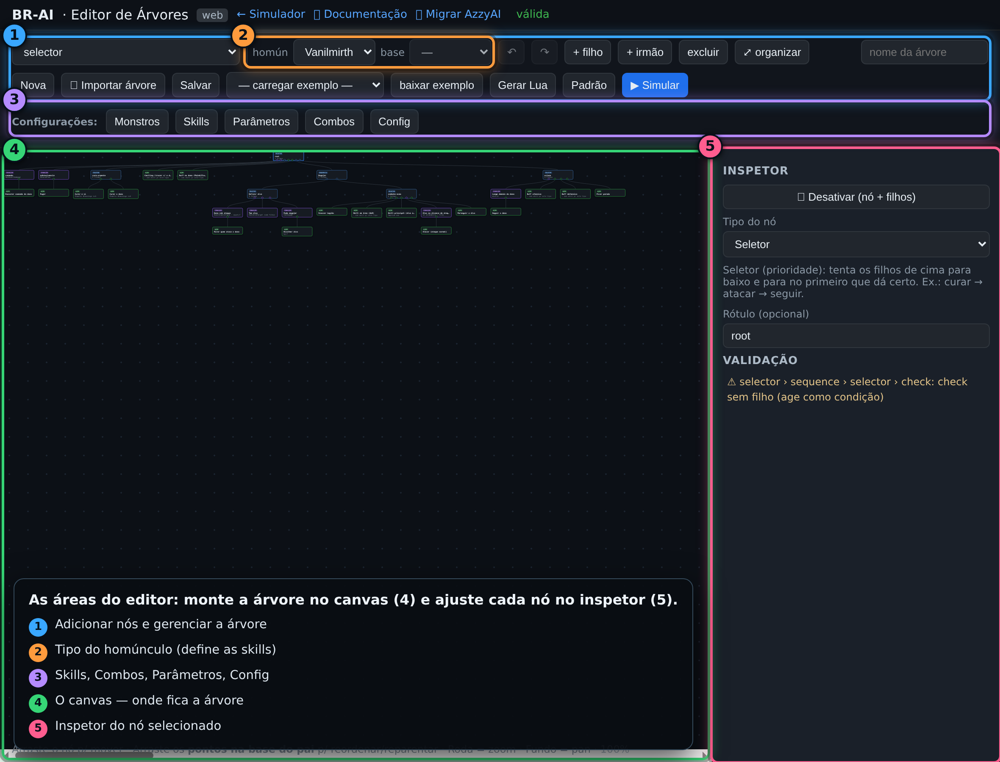
1. Exemplo básico: obedecer, atacar, voltar básico
Vamos montar a árvore mínima de qualquer homúnculo de combate. A ideia:
- Siga o comando do dono
- Se já tem um alvo: ataque (ou persiga até o alcance)
- Se pode engajar: escolha um alvo
- Senão, fique parado
1.1 Comece pela raiz
Toda árvore nasce de um Seletor (a "lista de prioridades"). Selecione um nó, escolha o tipo no menu da barra e clique em + filho para pendurar um nó abaixo dele. O contexto (homúnculo) aqui é o Filir.
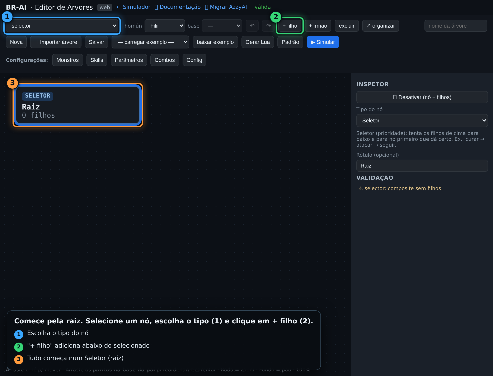
1.2 Uma Condição (o "se…")
Para "se já tem um alvo", use um nó Condição. No inspetor você troca o tipo para Condição e escolhe qual condição testar — aqui, Tem alvo válido. O filho da condição só roda quando ela é verdadeira.
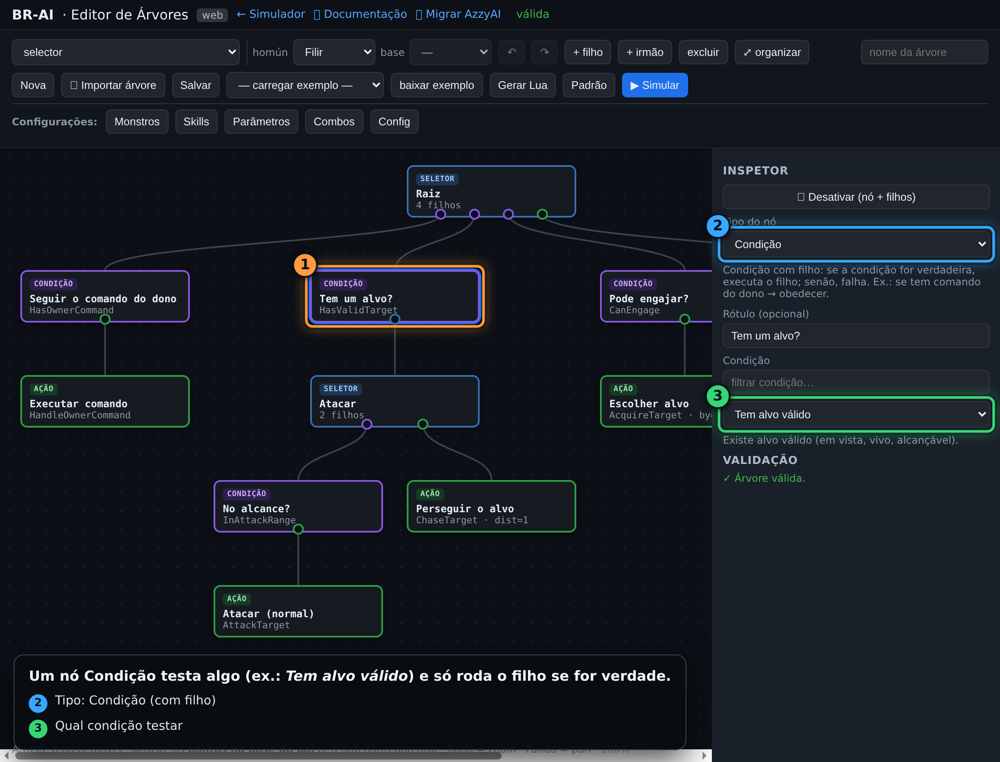
1.3 Uma Ação (o "faça…")
Para "persiga o alvo", use um nó Ação. A lista de ações é agrupada por tema (Alvo, Ataque, Movimento, Skills, Buffs…), o que facilita achar a que você quer.
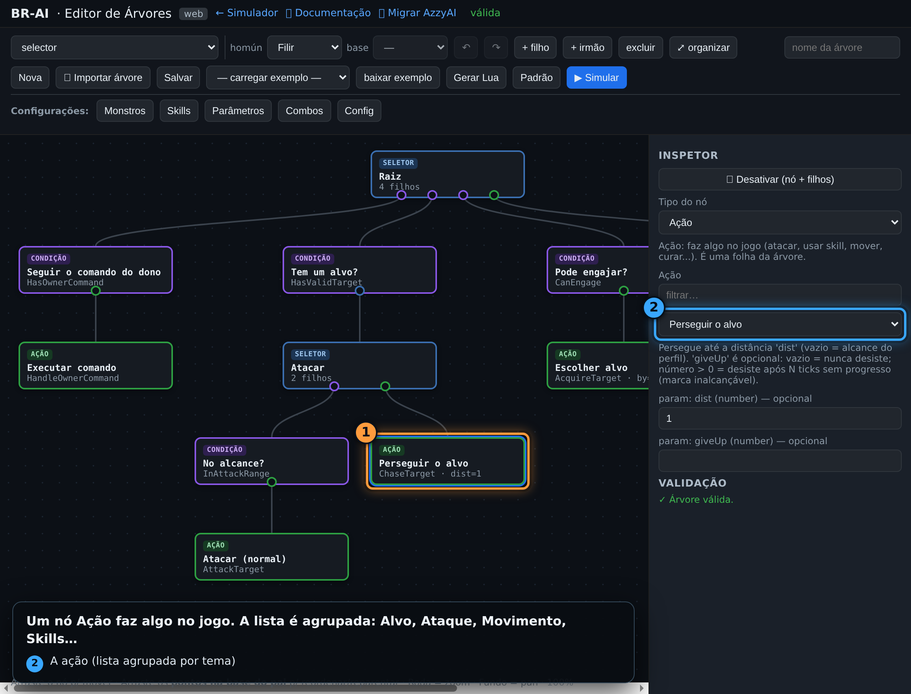
1.4 A árvore básica pronta
Juntando tudo num Seletor, na ordem de prioridade. Repare como ela lê de cima para baixo, igual à sua lista.
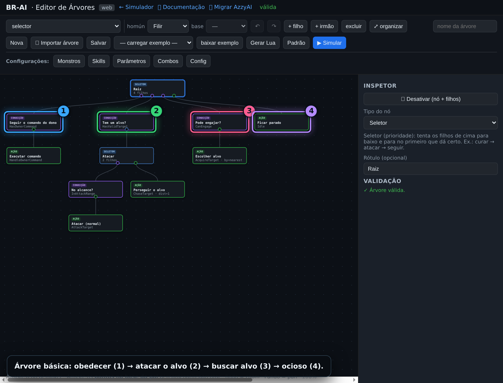
2. Exemplo completo: o Dieter intermediário
Agora a ideia completa de um Dieter (Homunculus S, base Amistr), que é a que motivou esta página:
- Siga o comando do dono
- Use Tempering lv10 (mantenha o buff)
- Caso tenha um alvo definido:
- Use Blast Forge lv10
- Caso esteja ao alcance do ataque básico: use o ataque básico
- Persiga o alvo
- Caso possa engajar: escolha o alvo com menor vida
- Quando estiver ocioso:
- Se está a mais de 3 quadrados do dono: aproxime-se do dono
- Use Magma Flow
- Fique parado
Antes de montar, escolha o homúnculo no topo: Dieter e base Amistr. Isso faz o editor mostrar só as skills que esse homúnculo realmente tem.
2.1 Passo 2 — manter o Tempering lv10
O Tempering é um buff no próprio homúnculo. Para uma skill específica como essa, use a ação Usar buff específico, escolha a skill e o nível. Como é um buff, ela "falha" enquanto o efeito está ativo — então não atrapalha o resto da lista; só recasta quando expira.
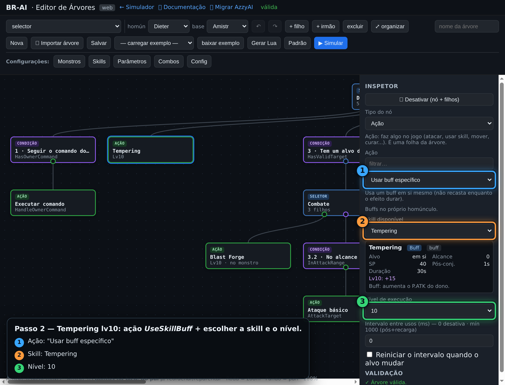
2.2 Passo 4 — escolher o alvo de menor vida
"Escolha o alvo com menor vida" é a ação Escolher alvo com a prioridade trocada para Menor HP (as outras opções são "Mais próximo" e "Atacante do dono").
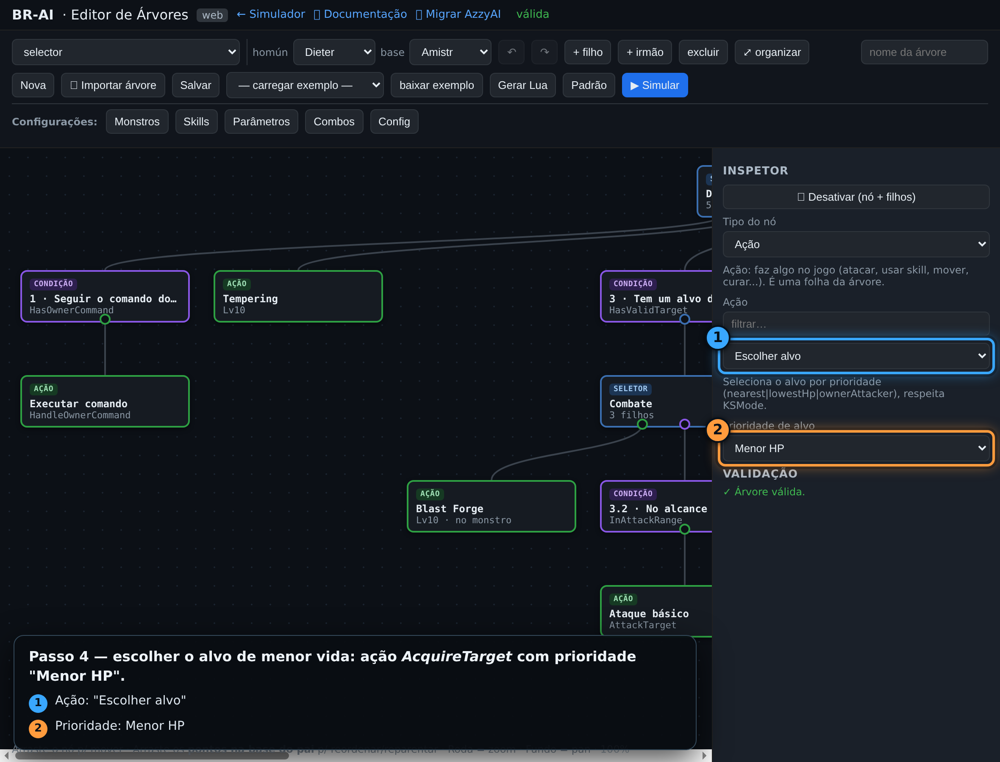
2.3 A árvore do Dieter, completa
Cada número abaixo é uma prioridade do Seletor raiz — exatamente a sua lista, de cima para baixo.
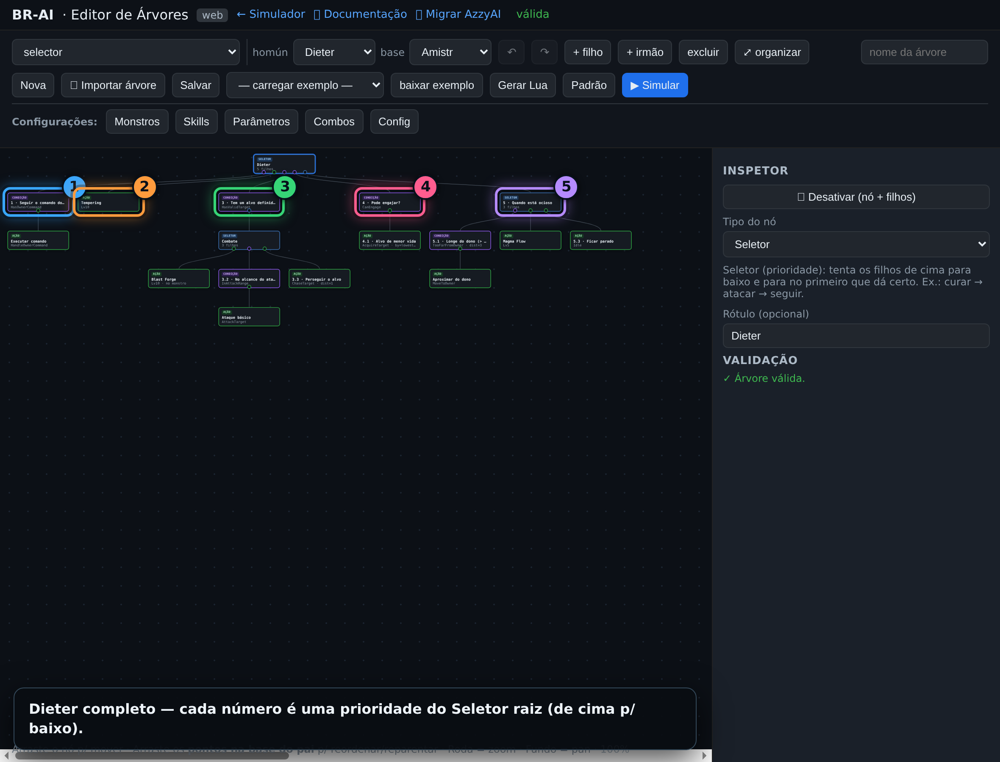
Na primeira passada sem alvo, o passo 3 ("tem alvo?") falha e a árvore cai no passo 4, que escolhe um alvo. Na passada seguinte o passo 3 já é verdadeiro e entra no combate. Esse "vai e volta" de um tick é normal e funciona bem.
2b. Blast Forge: dois jeitos de usar a mesma skill intermediário
O passo 3.1 ("use Blast Forge lv10") pode ser feito de dois jeitos. Saber a diferença é o pulo do gato para usar o editor bem.
Jeito A — skill específica (você escolhe a skill no nó)
Use a ação Usar skill específica e escolha Blast Forge, nível 10. Como é uma skill de área, aparece também o "alvo do solo" (onde centrar a área): no monstro-alvo. É direto e não depende de configuração nenhuma — o nó "amarra" a skill.
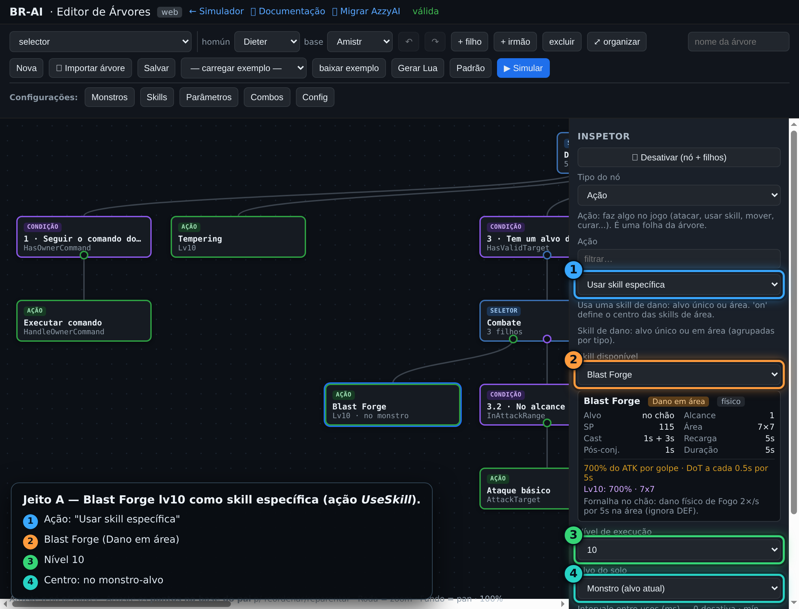
Jeito B — ação genérica + skills padrão do homúnculo
Use a ação genérica Skill em área (AoE). Ela não pede uma skill: usa as skills de área padrão do homúnculo, na ordem de prioridade. O Dieter já vem com Lava Slide e Blast Forge nesse papel — o inspetor mostra isso e oferece o botão Configurar skills.
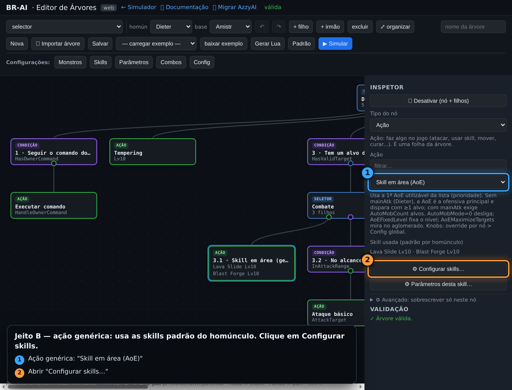
Clicando em Configurar skills abre a tela Skills por homúnculo. No papel Skill em área (AoE) do Dieter você vê Lava Slide e Blast Forge; pode ajustar o nível, remover uma, ou deixar só a Blast Forge se quiser que a IA priorize ela.
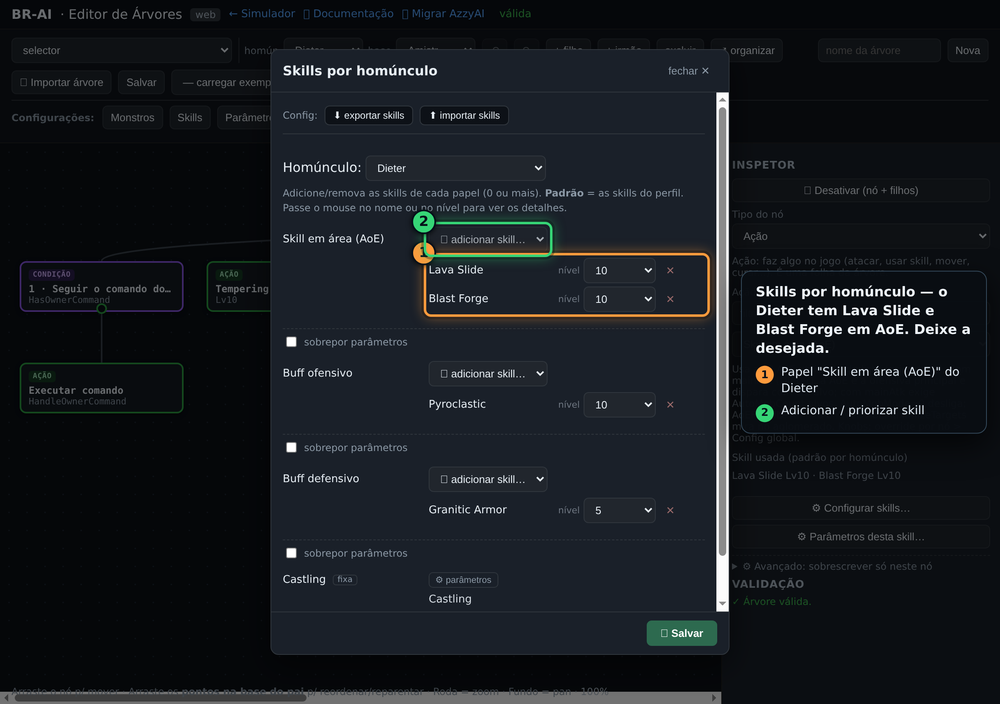
Jeito A quando você quer uma skill exata num ponto da árvore (ex.: um nuke específico contra chefe). Jeito B para o ataque do dia a dia: a mesma árvore serve para vários homúnculos, porque cada um usa a sua própria skill de área. As skills configuradas valem tanto no simulador quanto no Lua gerado.
3. Amistr tanque: proteger o dono intermediário
O Amistr é o tanque. A ideia muda o foco de "matar" para "segurar aggro e proteger o dono": trocar de lugar com o dono quando ele é cercado (Castling), manter os buffs e mirar em quem ataca o dono.
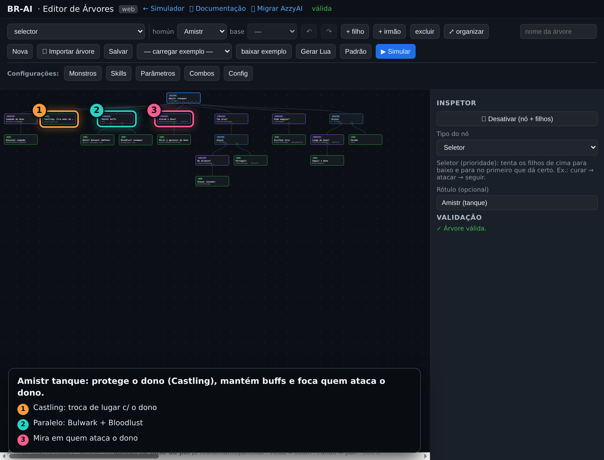
Ações automáticas como Castling, buffs e cura não pedem skill no nó: elas usam a skill padrão do papel daquele homúnculo. O ajuste fino (ex.: a partir de quantos monstros no dono o Castling dispara) fica no botão Parâmetros — veja a seção avançada.
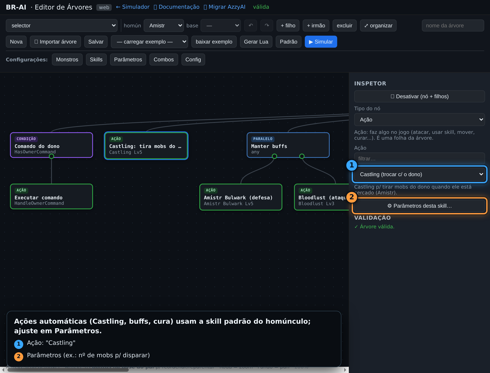
4. Suporte e reagir a chefes intermediário
A Eira (base Lif) é suporte: cuida do dono antes de pensar em atacar. A ideia: curar o dono se ele cair de vida (Silent Breeze), fugir se ela mesma estiver em apuros, manter o buff e, no combate, ter um ramo especial contra chefes.
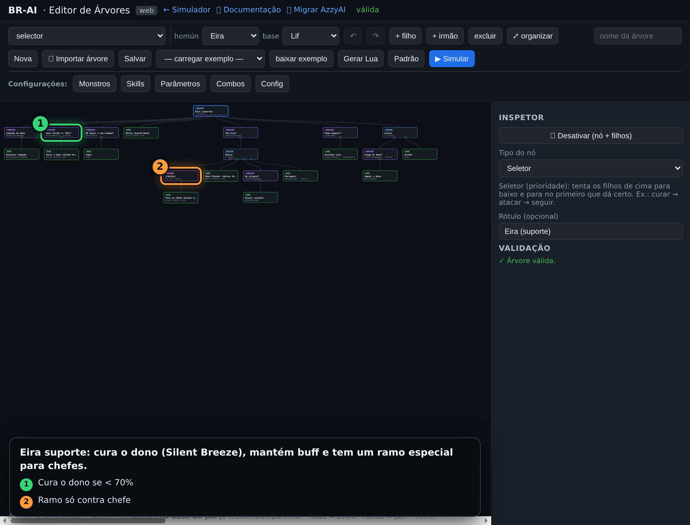
4.1 Reagir a um monstro/grupo: o nó Monstro
Para "se o alvo é um chefe, faça X", use o nó Monstro (monsterCheck). Ele roda o filho só quando o alvo atual é o monstro escolhido ou está no grupo escolhido. Os monstros e grupos (ex.: o grupo Chefes) são cadastrados no botão Monstros — veja Monstros & skills.
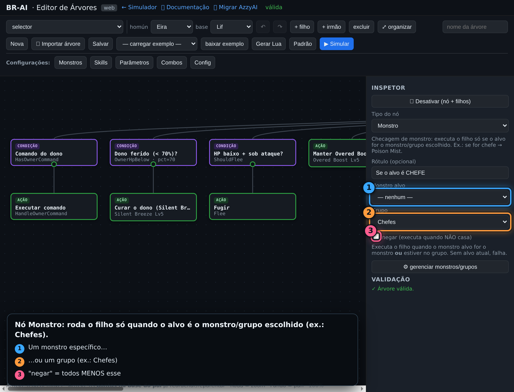
5. Combos da Eleanor avançado
A Eleanor luta com combos e dois estilos (Combate/Power e Agarrão/Grapple). Em vez de montar cada golpe na mão, ela usa um único nó guarda-chuva, Ofensiva da Eleanor, que cuida de estilo + esferas + combo de uma vez.
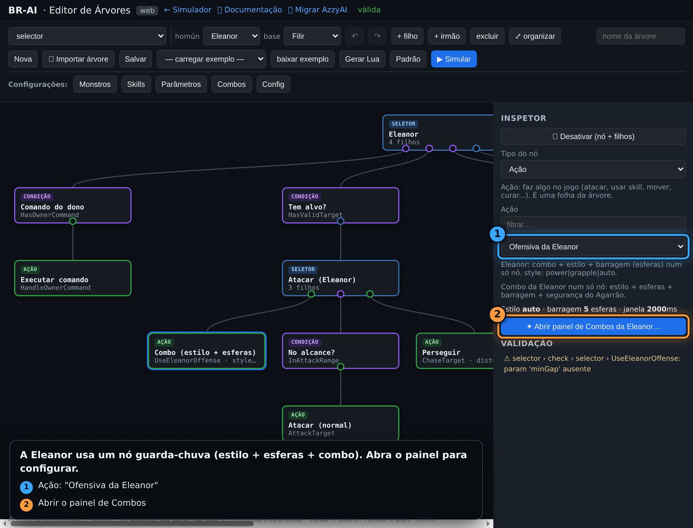
No painel de Combos da Eleanor você define o estilo padrão, a barragem de esferas (quantas esferas estimadas antes de começar o combo, para garantir o finalizador), a janela de encadeamento e o limite de ameaça para liberar o Agarrão. Embaixo, as duas cadeias (Power e Grapple) com o nível de cada golpe — note o aviso de que o E.Q.C. é proibido em Boss/MVP.
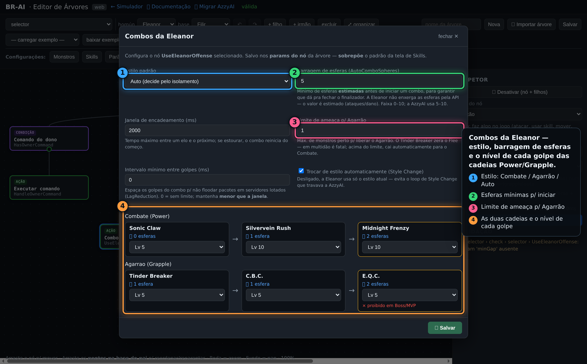
No estilo Auto, a Eleanor entra no Agarrão só quando está isolada (poucos monstros perto, dentro do "limite de ameaça"); em multidão, fica no Combate. Isso evita a armadilha do Tinder Breaker, que zera o Flee.
6. Invocação da Sera avançado
A Sera invoca uma Legião de insetos. A ação Invocar/manter Legião decide sozinha quando (re)invocar. No nó você define os parâmetros que sobrepõem o padrão: nível, política de re-invocação (onExpire, keepFull, minCount) e o número mínimo de inimigos por perto.
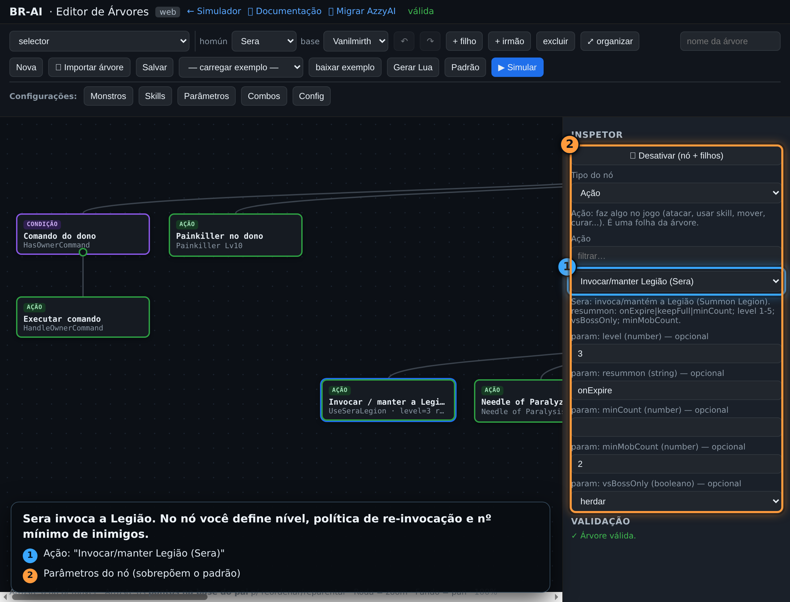
O padrão da invocação fica na tela de Skills, no painel de invocação: ali você vê quantos insetos saem por nível e configura a política com controles mais amigáveis (o nó na árvore tem prioridade sobre isso).
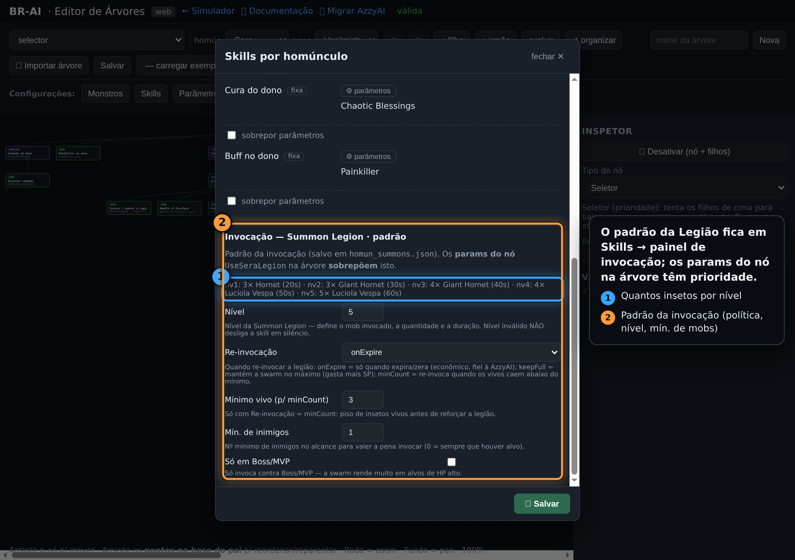
7. Recursos avançados avançado
7.1 Recarga (cooldown): "a cada X segundos"
O decorator Recarga deixa o filho agir e depois o bloqueia por alguns ms. Ótimo para temporizar algo — por exemplo, jogar um debuff de chefe só a cada 12 segundos, em vez de toda hora.
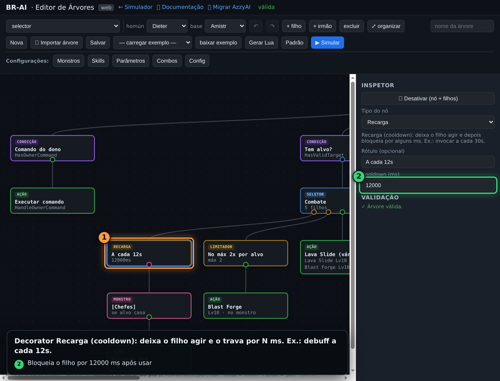
7.2 Limitador: "no máximo N vezes"
O decorator Limitador deixa o filho dar certo no máximo N vezes. Útil para algo que só deve acontecer poucas vezes (um setup inicial, por exemplo). A chave agrupa o limite quando você quer compartilhá-lo entre nós.
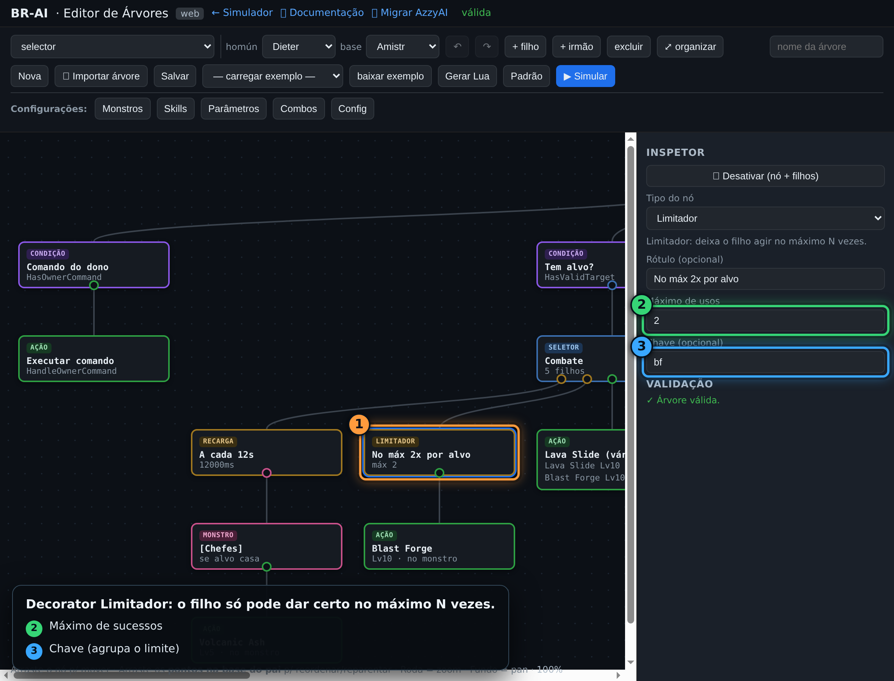
7.3 Parâmetros por papel: ajuste fino sem mexer na árvore
O botão Parâmetros abre um painel com uma aba por papel (skill de área, buff, cura…). Ali você ajusta quando e como cada skill dispara — por exemplo, a partir de quantos monstros agrupados a AoE vale a pena, ou a reserva de SP. É global do homúnculo e vale no simulador e no Lua.
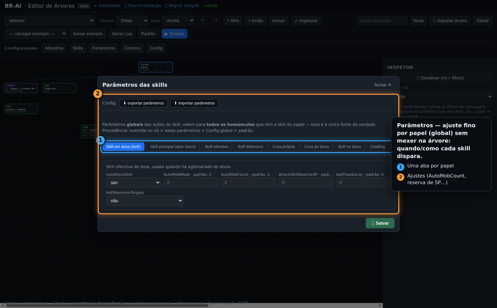
7.4 Desativar um nó para testar
Quer testar uma versão da árvore sem um ramo, mas sem apagá-lo? Desative o nó (botão no inspetor ou tecla D). Ele fica cinza, não executa e some do Lua ao gerar — depois é só reativar.
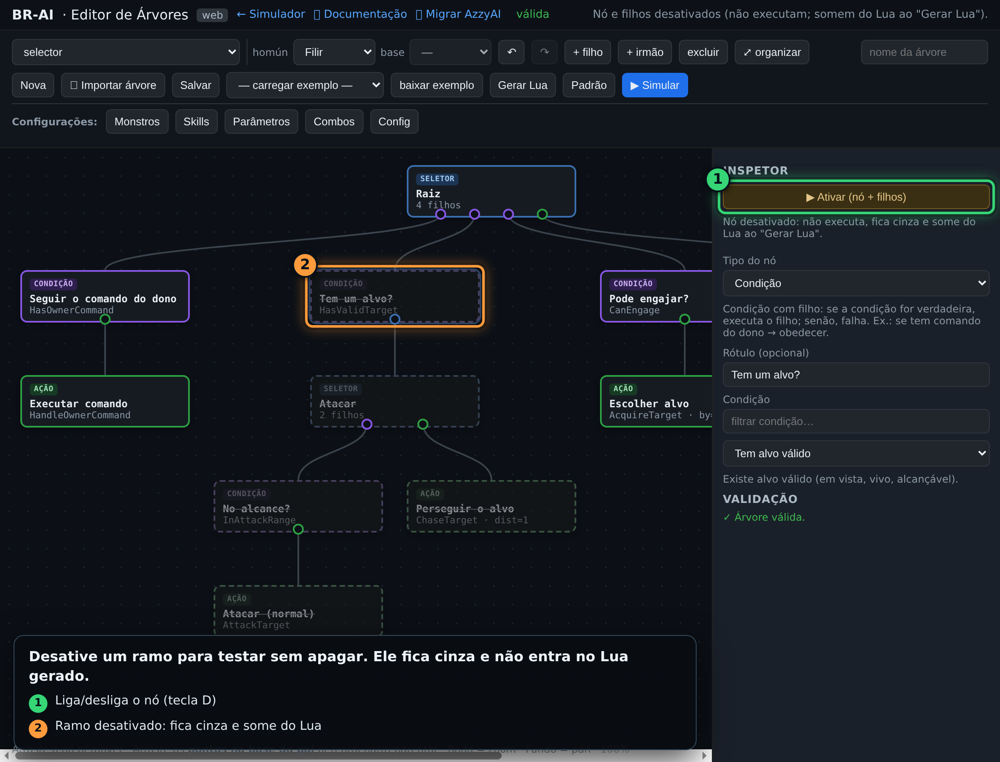
Próximos passos: testar e levar ao jogo
Com a árvore montada, o fluxo é sempre o mesmo:
- Salve a árvore (dê um nome no topo).
- Clique em ▶ Simular e teste num cenário (dono + monstros). Veja a árvore acender ao vivo e confira se cada prioridade dispara como você imaginou — detalhes no Guia do Simulador.
- Volte, ajuste (reordene prioridades, troque skills, desative ramos) e repita.
- Quando estiver bom, clique em Gerar Lua para baixar o pacote pronto para a pasta da IA do RO — veja o Guia do Editor.
Escreva a ideia como lista de prioridades → Seletor na raiz, Condição para os "se…", Ação para os "faça…", de cima (mais urgente) para baixo (ocioso). Skills específicas pelo nó, skills do dia a dia pelos papéis. Teste no simulador e gere o Lua. Pronto.